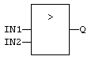

Operator
Test if first input is greater than second input.
|
Name |
Type |
Description |
|
IN1 |
ANY |
First input. |
|
IN2 |
ANY |
Second input. |
|
Name |
Type |
Description |
|
Q |
BOOL |
TRUE if IN1 > IN2. |
Both inputs must have the same type. In LD language, the input rung (EN) enables the operation, and the output rung is the result of the comparison. In IL language, the GT instruction performs the comparison between the current result and the operand. The current result and the operand must have the same type.
Comparisons can be used with strings. In that case, the lexical order is used for comparing the input strings. For instance, "ABC" is less than "ZX"; "ABCD" is greater than "ABC".
Q := IN1 > IN2;

The comparison is executed only if EN is TRUE.